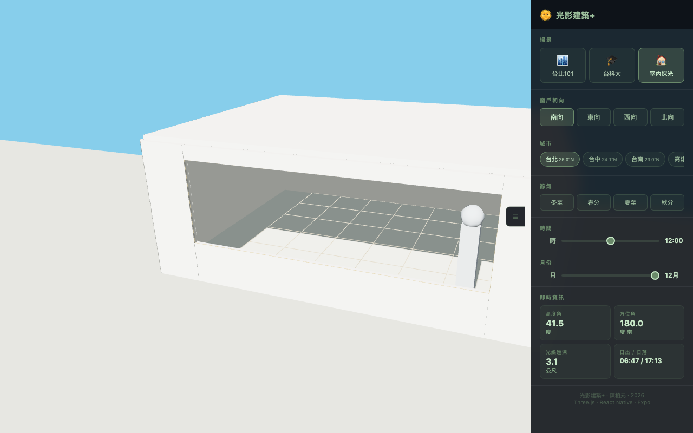
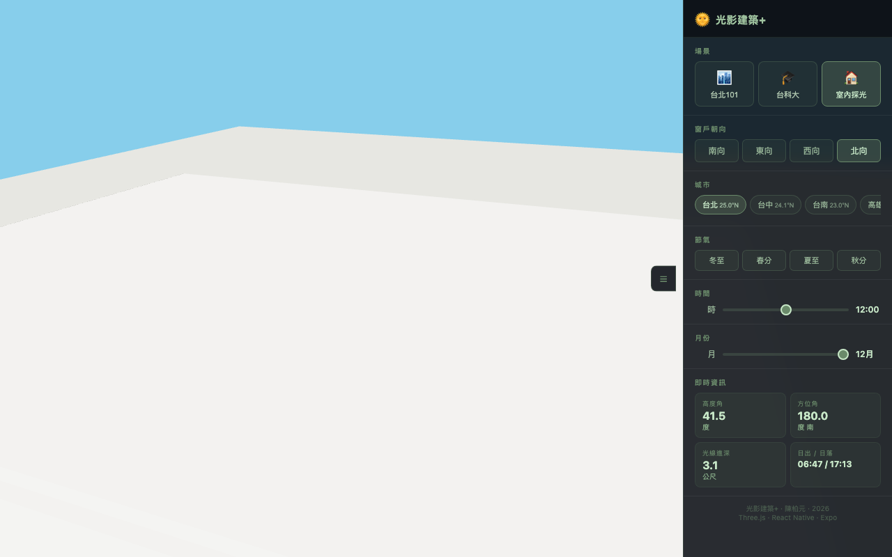
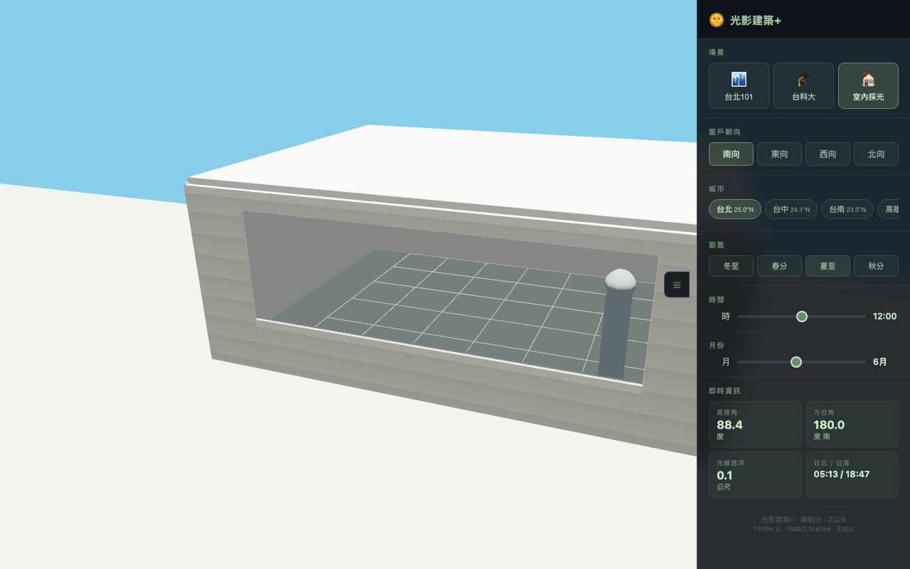
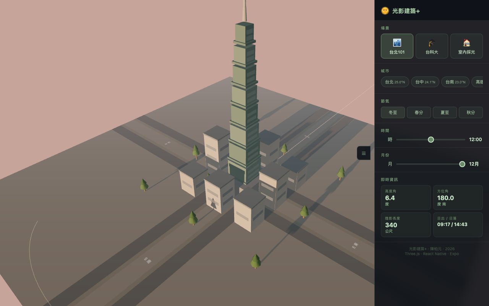
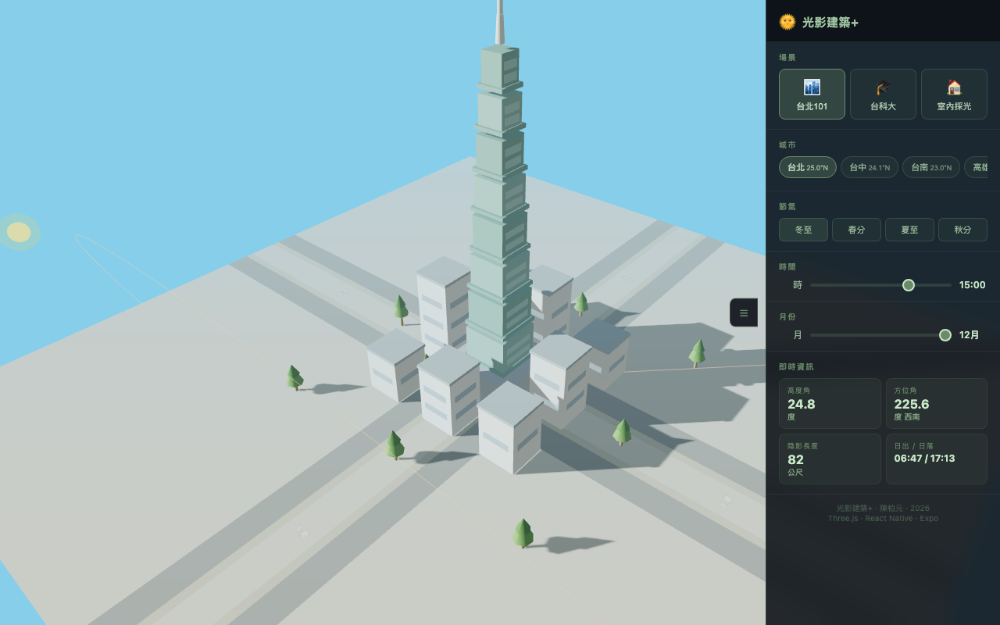

Personal Portfolio | Architecture
國立臺灣科技大學 建築系
光影建築+
Web Tool Development Report
針對建築朝向、地理緯度與日照能量之
數位模擬研究及工具開發報告
申請人：陳柏安 (Chen Bo-An)
115學年度 個人申請入學專題作品集
P.01
針對建築朝向、地理緯度與日照能量之
數位模擬研究及工具開發報告
申請人：陳柏安 (Chen Bo-An)
115學年度 個人申請入學專題作品集
這份研究的起點，來自於我對家中「光環境」最真實的體感差異。我居住的房間朝向正北方，在台灣漫長的冬季，室內幾乎整天沒有直射陽光。那種陰冷且必須整天開啟人工照明的壓抑感，與我偶然在鄰居「朝南」客廳感受到的燦爛陽光形成強烈對比。

南向 冬至正午｜光線進深 3.1m

北向 冬至正午｜無直射光
圖 1.1：冬日正午朝北與朝南房間採光的強烈視覺對比（3D 模擬）
同樣的緯度、同樣的時間，只因為窗戶朝向不同，生活品質竟有如此巨大的差異。這引發了我的好奇：太陽到底在哪裡？它的位置怎麼隨時間和季節改變？建築的朝向如何決定一個空間是否「有光」？帶著這些疑問，我決定開發一個互動式光影模擬器。
以 3D 場景呈現不同建築朝向、不同季節下的陰影變化，讓傳統平面圖紙上難以觀察的採光問題「看得見」。
比較南／東／西／北四個朝向在各季節的光線進入情形，深入理解為什麼朝向選擇是建築設計初期最重要的關鍵決策。
從新加坡（1°N）到赫爾辛基（60°N），模擬並體驗緯度對日照的根本性影響，進而理解台灣地理條件在全球建築脈絡中的位置。
將抽象的物理數據轉化為互動式的網頁工具，讓任何人用手機或電腦開啟連結，就能直觀操作的日照教育工具。
① 台北101都市街道：以 101 為主體呈現都市陰影疊加效果。場景中高度角越低，陰影越長，直觀呈現了冬日暖陽照不進低樓層都市峽谷的原因。
② 台科大校園：依據實際校園配置圖重建，以建築系所在的 RB 綜合研究大樓 為核心。透過模擬，我能具體觀察未來學習環境中，建物間的遮擋與採光關係。
③ 室內採光模擬：在 8m×6m 的房間中即時觀察光斑。我發現南向房間在台灣冬季，正午陽光能深入室內約 3 公尺，溫暖明亮；夏季則因太陽角度高而幾乎無光射入，完美詮釋了「冬暖夏涼」的被動式設計精髓。
冬至正午｜進深 3.1m

夏至正午｜進深 0.1m
圖 3.1：南向房間冬夏進光深度對比——冬暖夏涼的被動式設計原理
太陽位置並非隨機，而是遵循嚴謹的天文公式。下表為本工具實作之核心公式演算出的冬至數據：
| 城市 | 緯度 | 冬至正午高度角 | 光環境特徵 |
|---|---|---|---|
| 赫爾辛基 | 60°N | 約 6.5° | 太陽貼近地平線，陰影極長 |
| 倫敦 | 51°N | 約 15.5° | 冬季日光稀缺，極度依賴朝向 |
| 東京 | 35°N | 約 31.5° | 溫帶氣候下的明顯影子長度 |
| 台北 | 25°N | 約 41.5° | 亞熱帶的光影層次豐富 |
| 曼谷 | 13°N | 約 53.5° | 太陽較高，遮陽需求增加 |
| 新加坡 | 1°N | 約 65.5° | 太陽接近天頂，朝向影響較小 |
這項對比讓我理解到，緯度決定了居住體驗。在新加坡，太陽幾乎從頭頂照下，核心問題是遮陽與通風；越往高緯度，建築師必須像獵人一樣捕捉每一寸珍貴的陽光。
我沒有深厚的 JavaScript 基礎，但我有一個清楚想解決的問題。我採用純網頁技術（HTML + Three.js）開發，並與 Claude Code (AI) 深度協作。這不是簡單的複製代碼，而是一場高強度的設計溝通實驗。
「在實作室內切換時，房間一度飄在空中；或是台科大場景建模時，大樓位置疊加錯誤。甚至陰影方向曾出現早上、下午顛倒。我雖不懂背後複雜的渲染代碼，但我知道『早上太陽從東邊來，影子應該往西』，憑著對物理現實的直覺判斷與回饋，我引導 AI 持續修正，直到模型接近真實配置。」
| 組件 | 技術選型 | 作用說明 |
|---|---|---|
| 平台技術 | HTML + JavaScript | 無需安裝，手機電腦瀏覽器直接開啟 |
| 3D 渲染引擎 | Three.js | 處理動態光源與物理陰影運算 |
| 陰影技術 | PCFSoftShadowMap | 模擬軟陰影質感，接近真實自然光 |
| 部署平台 | GitHub Pages | 免費靜態部署，任何人用連結即可存取 |
這套公式賦予了這個網頁模擬器跨緯度運算的科學靈魂。
這個模擬器給了我最初問題的答案：我家的北向房間，並不是「比較暗」，而是物理上就不可能有冬天的直射陽光。這不是設計問題，是地理問題。
陽光深入，被動獲熱
僅有漫射，無直射光
「有光」不等於「好光」。西向房間在夏季下午會面臨嚴重的西曬過熱，東向則只有上午短暫受光。模擬證實：「朝向」是建築節能、熱舒適的第一道防線。
透過全球尺度的比較，我開始思考：許多我們熟悉的建築教科書範例來自歐洲，那些在 50°N 緯度下誕生的設計原則，在 25°N 的台灣適用嗎？
模擬結果顯示，在赫爾辛基，建築師必須拼命捕捉陽光；而在熱帶地區如新加坡，遮陽反而是重點。這印證了建築必須具備深刻的在地性。建築師的職責，在於利用數位技術解讀土地的氣候密碼，而非套用統一的標準模板。

赫爾辛基 60°N｜冬至正午高度角 6.4°｜陰影 340m

台北 25°N｜冬至下午高度角 24.8°｜陰影 82m
圖 4.1：高緯度赫爾辛基與台北的冬至日照極端對比
在台北 101 的場景中，一棟 38m 的建物在冬至下午 3 點，影長可延伸超過 70 公尺。這讓我深刻理解台灣《建築技術規則》第 23 條規定建物間距的原因——採光不是個人問題，而是都市正義。
圖 4.2：台北101冬至下午3點，高度角24.8°，主塔影長82公尺覆蓋周邊街道
模擬的限制與反思：目前的模型尚無法精確計算牆體顏色帶來的「反射光」以及細部的屋簷結構。這提醒我，工具雖能輔助直觀理解，但真正的設計仍需更細緻的專業判斷與經驗積累。
以前我只會感官化地抱怨「我家很暗」，現在我能用數據解釋「台北冬至的高度角讓北側無光」。這種將生活不適轉化為科學分析的過程，是我開發此專案最大的收穫。
在做這個專案之前，我對建築的想像停留在畫圖與美感。但這個過程讓我看到，「光」是這一切的交叉點：它關於物理（角度、反射）、關於生理（感知）、關於文化、更關於永續。理解採光，是進入建築設計核心的最佳路徑。
「我相信這種『提出問題、驗證結果、持續修正』的數位化思考方式，比任何純粹的技術能力都更接近建築設計的本質。」
讓使用者輸入窗高與遮陽板深度，自動判斷「夏至能遮陽、冬至能採光」的最佳尺寸。這是在台灣氣候下被動式設計最實用的計算插件。
結合手機相機，在真實空間中疊加陽光方向與陰影預測，讓使用者在預售屋或工地現場就能直接模擬採光效果，降低居住者的資訊不對稱。
計算特定朝向、特定城市的全年平均日照時數並輸出圖表，為永續建築設計提供更長時效的數據基礎。
「讓每一座建築，都能擁抱最溫暖的陽光。」
🔗 線上體驗：cheyuan1115.github.io/shadow-sim-app
陳柏安 | 115學年度 | 國立臺灣科技大學 建築系書審專題報告